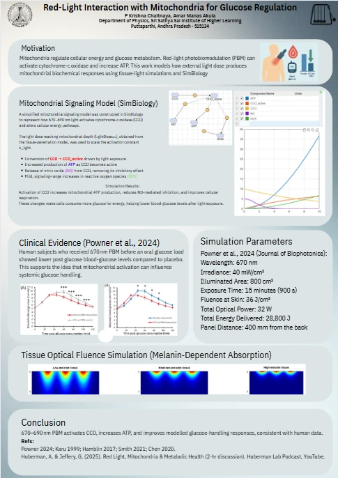

← Back to Projects
Red-light interaction with mitochondria for glucose regulation
Poster presentation · NUPC, IISER Tirupati
P. Krishna Chaitanya and Amar Manas Akula · Department of Physics, Sri Sathya Sai Institute of Higher Learning
Question

Red and near-infrared light at 670–690 nm (photobiomodulation) is absorbed by cytochrome c oxidase (CCO), an enzyme in the mitochondrial respiratory chain. Can a simple model of that absorption explain why a human study saw lower blood glucose after red-light exposure?
What the poster does
- Mitochondrial signalling model (MATLAB SimBiology). A simplified reaction network:
- light converts CCO to an active state;
- active CCO raises ATP production;
- nitric oxide (NO) is released from CCO, removing its inhibitory effect;
- there is a small rise in reactive oxygen species (ROS).
- Tissue optical fluence simulation. Light penetration into skin with low, moderate and high melanin. Darker skin absorbs more near the surface, so less light reaches deeper tissue.
- Comparison with clinical data. Powner et al. (2024, Journal of Biophotonics) gave volunteers 670 nm light before an oral glucose load and found lower post-meal blood glucose than with placebo.
Exposure parameters
| Parameter | Value |
|---|---|
| Wavelength | 670 nm |
| Irradiance | 40 mW/cm² |
| Illuminated area | 800 cm² |
| Exposure time | 15 min (900 s) |
| Fluence at skin | 36 J/cm² |
| Total optical power | 32 W |
| Total energy delivered | 28,800 J |
These are internally consistent: 40 mW/cm² × 800 cm² = 32 W, and 32 W × 900 s = 28,800 J.
Result
In the model, light-driven CCO activation increases ATP production and reduces NO inhibition, so cells can use more glucose for energy. This is consistent in direction with the lower blood glucose seen in the human study.
Limits
- The model does not include glucose itself. The glucose link rests on the clinical study, not on the simulation.
- The network is a simplified, qualitative model with illustrative rate constants. It is not fitted to measured data.
References
- Powner, M. B. et al. (2024). Journal of Biophotonics.
- Karu, T. (1999).
- Hamblin, M. R. (2017).
- Smith (2021); Chen (2020), as cited on the poster.
- Huberman, A. and Jeffery, G. (2025). Red Light, Mitochondria & Metabolic Health. Huberman Lab Podcast.